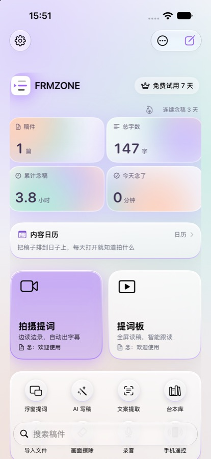
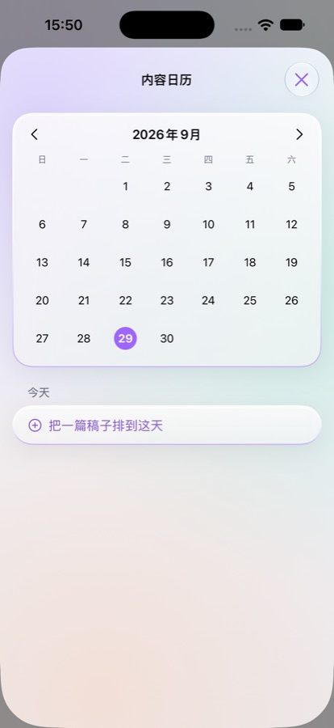
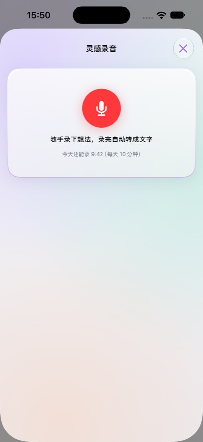
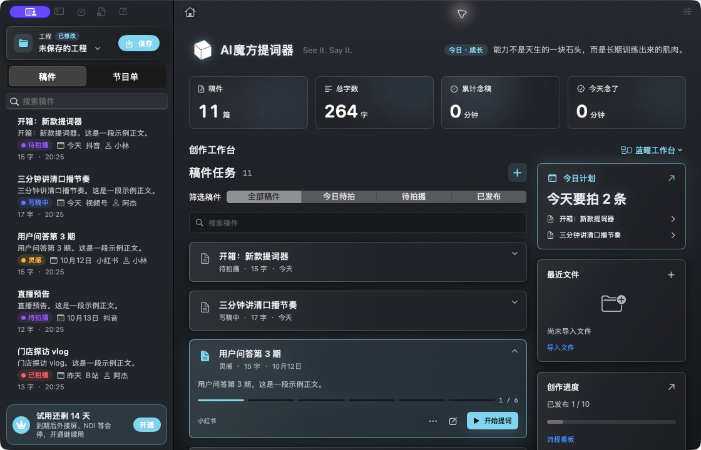
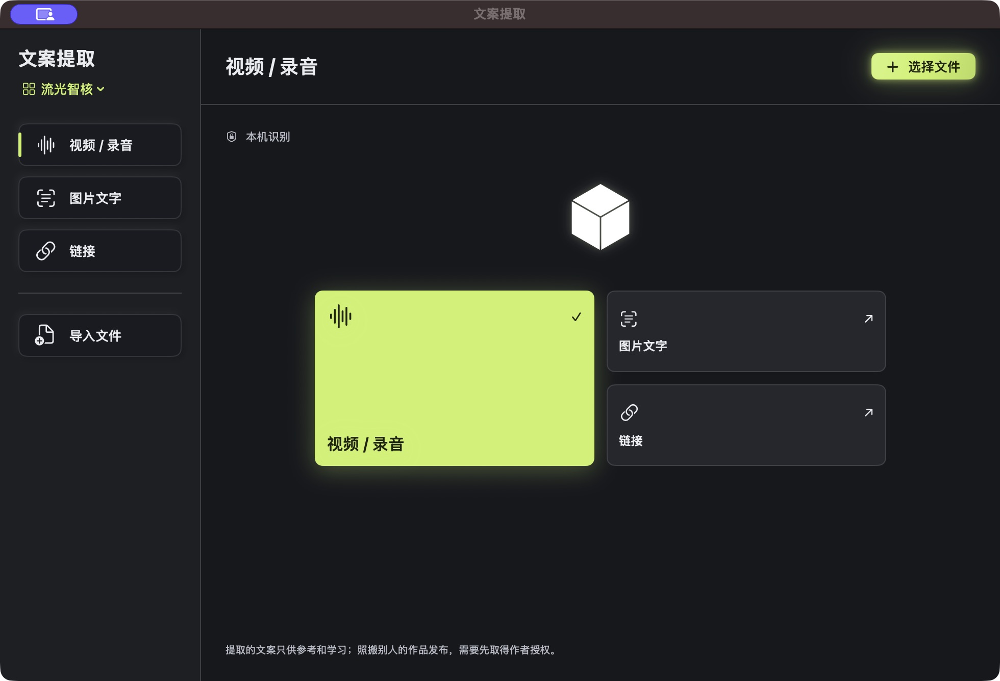

从想法到成片，一个 App 走完
写稿、排期、提词、拍摄、复盘。iPhone、iPad 和 Mac 通过 iCloud 同步；Android 内测版使用本机存储。
智能跟读
识别你念到哪一句，文字跟着走；念错退回去重念，它也跟着退。另有声控、匀速、手动翻页三种模式。
拍摄提词
一边看稿一边录，美颜、滤镜、换背景、4K / 60 帧；录完一键剪掉重读、去气口、出字幕。
刘海与浮窗提词
iOS 原生版提供靠近摄像头的刘海布局和画中画提词。其他平台的显示效果取决于系统权限和目标应用；网页浮窗仅在支持的桌面浏览器可用。
内容日历
灵感、写稿、待拍、已拍、已剪、已发布，排好日子，每天打开就知道拍什么；团队可以按人排期。
素材集与 AI 创作
原生版集中管理录音、文件、图片和链接，本机转写后可整理成稿；发送给 AI 前由你确认，支持改成口语、压到指定时长等任务。
电脑版演播室
多块外接屏同时输出、NDI、手机遥控、多机主备热切换、Tally 灯，直播间和电视台都能用。



布局更清晰，交互跟着主题走
网页版新增可切换主页、主题强调色和统一控件。拍摄、刘海提词、AI成片等能力仍由 Mac / iOS 原生版提供，网页版暂不提供这些工具。
网页版已同步
官网首页更新为四张提词模式海报和一张滚动方式海报，完整展示，每 3 秒淡入淡出；在线工作台保留随主题变化的横幅。智能跟读支持丝滑、步进、柔性三种方式，步进可选 1–3 个实际显示行。保留原有稿件、授权和界面偏好。
原生版近期功能
AI成片接入识别、剪辑与字幕导出；刘海提词增加稿件选择和平台内调节；手机主页可切换布局，素材集和功能说明控件持续优化。具体能力以所安装版本为准。
Mac 新界面预览
蓝曜、折叠工作台保留现有功能；流光智核为 AI 工作区加入主题色任务磁贴和清晰原稿预览。最新 Mac 布局目前为独立预览，不代表已发布新的正式安装包。


先免费用，觉得好再开通
手机和电脑同一个 Apple 账号通用；首次订阅可免费试用 7 天。价格以 App Store 显示为准。也可以在官网直接买授权码，电脑版、手机版、网页版通用。
免费版
- 提词板永久免费，稿件不限
- 智能跟读每天 20 分钟
- 拍摄 / 浮窗每天 20 分钟
- 口播复盘每天 3 次
- AI 写稿、内容日历（排 10 条）
Pro
- 跟读、拍摄、浮窗不限时长
- 4K / 60 帧、眼神校正、SRT 字幕
- 录完处理、口播复盘不限
- 外接屏幕、NDI、手机遥控
- Apple Watch 遥控、与电脑互传
MAX
- Pro 全部功能
- 团队排期、网页多人改稿
- 多机主备、Tally 灯、退出清稿
- 工程文件、同时 5 台设备
- 机构按机位授权、开发票
一次买断，MAX 全部功能和以后的更新都包含；AI 算力点另购。
付款后会马上收到一串 VP1- 开头的授权码，复制粘贴就能用：电脑版在屏幕左上角「AI魔方提词器」菜单 ›「授权…」；手机版在「设置 › 版本与授权 › 输入序列号」；网页版点右上角的版本按钮。一个授权码给一个人自己的设备用，请妥善保存。
查看完整版本对比
| 功能 | 免费版 | Pro | MAX |
|---|---|---|---|
| 声控 / 匀速 / 手动翻页，稿件不限，提词板，极简模式 | ✓ | ✓ | ✓ |
| 智能跟读 | 每天 20 分钟 | 不限 | 不限 |
| 拍摄提词（美颜、滤镜、换背景） | 每天 20 分钟 | 不限 | 不限 |
| 4K / 60 帧拍摄 | 1080p / 30 帧 | ✓ | ✓ |
| 浮窗提词 | 每天 20 分钟（和拍摄共用） | 不限 | 不限 |
| 口播复盘 | 每天 3 次 | 不限 | 不限 |
| 剪掉重读、去气口、人声增强、识别字幕 | 每天 3 条 | 不限 | 不限 |
| SRT 字幕导出 | — | ✓ | ✓ |
| 眼神校正 | — | ✓ | ✓ |
| 内容日历：排期、今天要拍、到期提醒 | 最多排 10 条 | 不限 | 不限 |
| 录音转文字、变成稿件 | 每天 10 分钟 | 每天 1 小时 | 不限 |
| AI 写稿、AI 助手 | ✓ | ✓ | ✓ |
| 工程：全部稿件和设置存成一个文件 | — | — | ✓ |
| 历史版本 | 最近 5 版 | 每篇 80 版 | 每篇 80 版 |
| 手机遥控、跟随电脑（从机）、多机同步 | ✓ | ✓ | ✓ |
| 同时使用的设备（主设备 + 遥控 / 从机） | 2 台 | 3 台 | 5 台 |
| Apple Watch 遥控、手机与电脑互传、OBS / vMix 浏览器源 | — | ✓ | ✓ |
| 外接屏幕 / 多屏输出 | — | ✓ | ✓ |
| 电脑版：NDI 输出、直播弹幕 | — | ✓ | ✓ |
| 电脑版：显示当前时间 | — | ✓ | ✓ |
| 电脑版：网页多人改稿（团队协作、在线名单、自动合并） | — | — | ✓ |
| 团队排期（给每条内容指定负责人，按人看日历和看板） | — | — | ✓ |
| 电脑版：多机主备热切换、Tally 灯、退出清空稿件 | — | — | ✓ |
| 机构多机位授权码、发票 | — | — | ✓ |
给直播间、课程团队和演播室
按场景配好的三套用法，MAX 授权按机位购买，内网机器离线激活。